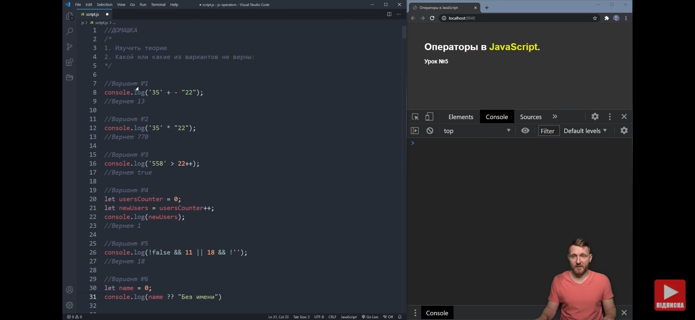

Завдання "Оператори" - Вирішення

- Варіант № 1 console.log('35' + -"22"); // МОЖЛИВА Логічна помилка. Відбудеться конкатенація - очікується рядок "35-22" тому, що бінарний оператор [ + ] не конвертує дані у інший тип. Якби був використаний лише оператор [ - ], який конвертує тип даних, очікувалося б число 13.
- Варіант № 2 console.log('35' * "22"); // Відбудеться обчислення , так як оператору множення вдасться конвертувати дані в числовий тип.
- Варіант № 3 console.log('558' > 22++); // Помилка, так як унарний оператор Інкремент використаний у виразі із числом 22 , але Інкремент та Декремент працюють ЛИШЕ З ЗМІННИМИ
- Варіант № 4 let userCounter = 0; let newUsers = userCounter++ ; console.log(newUsers); // МОЖЛИВА Логічна помилка (якщо це спеціально не задумано - так як приклад вирваний з контексту). Результат не зміниться через використання суфіксного типу запису інкремента , тому для випадку миттєвого збільшення операнда на одиницю варто використати інкремент префіксного типу запису.
- Варіант № 5 console.log(!false && 11 || 18 && !''); // Відповідно до пріорітетності операторів вираз можна прочитати так: ((NOT FALSE) AND 11) OR (18 AND (NOT ' ')). Знаючи , що числа > 0 в булевому значенні будуть TRUE , а також що NOT FALSE === TRUE, а ще , що під час виконання Конюнкції буде повернено останнє значення, що повертає TRUE - Вираз матиме вигляд: (TRUE AND TRUEnum) OR (TRUEnum AND TRUE). В результаті ми отримаємо (TRUE AND [ TRUEnum ]) OR (TRUEnum AND TRUE) під час виконання логічног виразу: variantFive = !false && 11 || 18 && !'';
- Варіант № 6 let name = 0; console.log(name ?? "Без імені"); // Змінній name присвоєно значення 0 , тобто число нуль , що не є null/undefinate , тому у виразі : console.log(name ?? "Без імені"); очікується значення 0, тобто число нуль.